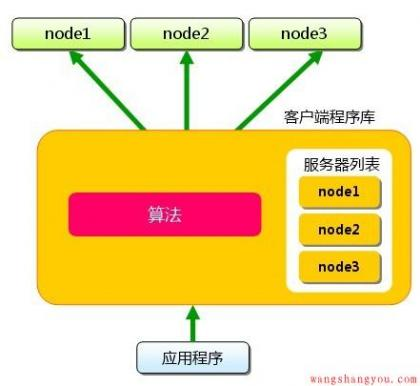
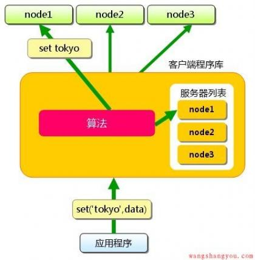
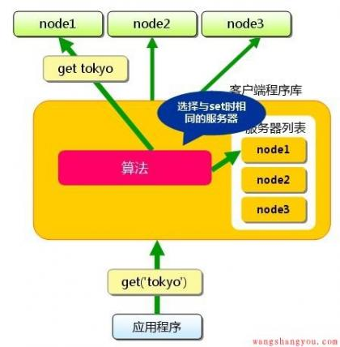
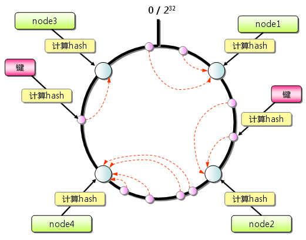
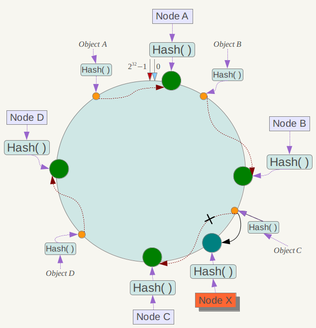
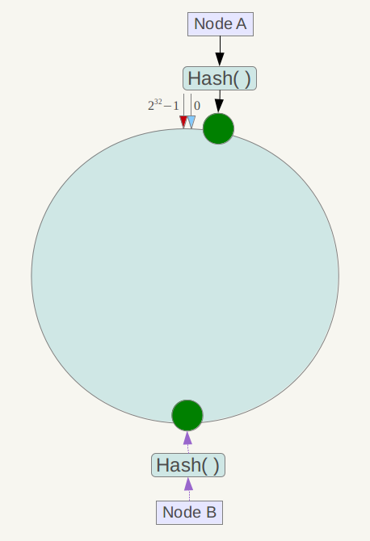

一致性Hash算法
memcached的分布式是什么意思？
下面假设memcached服务器有node1～node3三台，应用程序要保存键名为”tokyo”、”kanagawa”、”chiba”、”saitama”、”gunma”的数据。

首先向memcached中添加“tokyo”。将“tokyo”传给客户端程序库后，客户端实现的算法就会根据”键”来决定保存数据的memcached服务器。服务器选定后，即命令它保存”tokyo”及其值。

同样，”kanagawa”、”chiba”、”saitama”、”gunma”都是先选择服务器再保存。接下来获取保存的数据。获取时也要将要获取的键”tokyo”传递给函数库。函数库通过与数据保存时相同的算法，根据“键”选择服务器。使用的算法相同，就能选中与保存时相同的服务器，然后发送get命令。只要数据没有因为某些原因被删除，就能获得保存的值。

这样，将不同的键保存到不同的服务器上，就实现了memcached的分布式。memcached服务器增多后，键就会分散，即使一台memcached服务器发生故障无法连接，也不会影响其他的缓存，系统依然能继续运行。
根据余数计算分散
Memcached的分布式方法简单来说，就是“根据服务器台数的余数进行分散”。求得键的整数哈希值，再除以服务器台数，根据其余数来选择服务器。
余数计算的方法简单，数据的分散性也相当优秀，但也有其缺点。那就是当添加或移除服务器时，缓存重组的代价相当巨大。添加服务器后，余数就会产生巨变，这样就无法获取与保存时相同的服务器，从而影响缓存的命中率。
一致性hash(Consistent Hashing)
一致性哈希算法在1997年由麻省理工学院的Karger等人在解决分布式Cache中提出的，设计目标是为了解决因特网中的热点(Hot spot)问题，初衷和CARP十分类似。一致性哈希修正了CARP使用的简单哈希算法带来的问题，使得DHT可以在P2P环境中真正得到应用。
但现在一致性hash算法在分布式系统中也得到了广泛应用，研究过memcached缓存数据库的人都知道，memcached服务器端本身不提供分布式cache的一致性，而是由客户端来提供，具体在计算一致性hash时采用如下步骤：
- 首先求出memcached服务器（节点）的哈希值，并将其配置到0～232的圆（continuum）上。
- 然后采用同样的方法求出存储数据的键的哈希值，并映射到相同的圆上。
- 然后从数据映射到的位置开始顺时针查找，将数据保存到找到的第一个服务器上。如果超过232仍然找不到服务器，就会保存到第一台memcached服务器上。

从上图的状态中添加一台memcached服务器。余数分布式算法由于保存键的服务器会发生巨大变化而影响缓存的命中率，但Consistent Hashing中，只有在园（continuum）上增加服务器的地点逆时针方向的第一台服务器上的键会受到影响，如下图所示：

一致性Hash性质
考虑到分布式系统每个节点都有可能失效，并且新的节点很可能动态的增加进来，如何保证当系统的节点数目发生变化时仍然能够对外提供良好的服务，这是值得考虑的，尤其实在设计分布式缓存系统时，如果某台服务器失效，对于整个系统来说如果不采用合适的算法来保证一致性，那么缓存于系统中的所有数据都可能会失效（即由于系统节点数目变少，客户端在请求某一对象时需要重新计算其hash值（通常与系统中的节点数目有关），由于hash值已经改变，所以很可能找不到保存该对象的服务器节点），因此一致性hash就显得至关重要，良好的分布式cahce系统中的一致性hash算法应该满足以下几个方面：
- 平衡性(Balance)
平衡性是指哈希的结果能够尽可能分布到所有的缓冲中去，这样可以使得所有的缓冲空间都得到利用。很多哈希算法都能够满足这一条件。
- 单调性(Monotonicity)
单调性是指如果已经有一些内容通过哈希分派到了相应的缓冲中，又有新的缓冲区加入到系统中，那么哈希的结果应能够保证原有已分配的内容可以被映射到新的缓冲区中去，而不会被映射到旧的缓冲集合中的其他缓冲区。简单的哈希算法往往不能满足单调性的要求，如最简单的线性哈希：x = (ax + b) mod (P)，在上式中，P表示全部缓冲的大小。不难看出，当缓冲大小发生变化时(从P1到P2)，原来所有的哈希结果均会发生变化，从而不满足单调性的要求。哈希结果的变化意味着当缓冲空间发生变化时，所有的映射关系需要在系统内全部更新。而在P2P系统内，缓冲的变化等价于Peer加入或退出系统，这一情况在P2P系统中会频繁发生，因此会带来极大计算和传输负荷。单调性就是要求哈希算法能够应对这种情况。
- 分散性(Spread)
在分布式环境中，终端有可能看不到所有的缓冲，而是只能看到其中的一部分。当终端希望通过哈希过程将内容映射到缓冲上时，由于不同终端所见的缓冲范围有可能不同，从而导致哈希的结果不一致，最终的结果是相同的内容被不同的终端映射到不同的缓冲区中。这种情况显然是应该避免的，因为它导致相同内容被存储到不同缓冲中去，降低了系统存储的效率。分散性的定义就是上述情况发生的严重程度。好的哈希算法应能够尽量避免不一致的情况发生，也就是尽量降低分散性。
- 负载(Load)
负载问题实际上是从另一个角度看待分散性问题。既然不同的终端可能将相同的内容映射到不同的缓冲区中，那么对于一个特定的缓冲区而言，也可能被不同的用户映射为不同的内容。与分散性一样，这种情况也是应当避免的，因此好的哈希算法应能够尽量降低缓冲的负荷。
- 平滑性(Smoothness)
平滑性是指缓存服务器的数目平滑改变和缓存对象的平滑改变是一致的。
原理
基本概念
一致性哈希算法（Consistent Hashing）最早在论文《Consistent Hashing and Random Trees: Distributed Caching Protocols for Relieving Hot Spots on the World Wide Web》中被提出。简单来说，一致性哈希将整个哈希值空间组织成一个虚拟的圆环，如假设某哈希函数H的值空间为0-2^32-1（即哈希值是一个32位无符号整形），整个哈希空间环如下：

整个空间按顺时针方向组织。0和232-1在零点中方向重合。
下一步将各个服务器使用Hash进行一个哈希，具体可以选择服务器的ip或主机名作为关键字进行哈希，这样每台机器就能确定其在哈希环上的位置，这里假设将上文中四台服务器使用ip地址哈希后在环空间的位置如下：

接下来使用如下算法定位数据访问到相应服务器：将数据key使用相同的函数Hash计算出哈希值，并确定此数据在环上的位置，从此位置沿环顺时针“行走”，第一台遇到的服务器就是其应该定位到的服务器。
例如我们有Object A、Object B、Object C、Object D四个数据对象，经过哈希计算后，在环空间上的位置如下：

根据一致性哈希算法，数据A会被定为到Node A上，B被定为到Node B上，C被定为到Node C上，D被定为到Node D上。
下面分析一致性哈希算法的容错性和可扩展性。现假设Node C不幸宕机，可以看到此时对象A、B、D不会受到影响，只有C对象被重定位到Node D。一般的，在一致性哈希算法中，如果一台服务器不可用，则受影响的数据仅仅是此服务器到其环空间中前一台服务器（即沿着逆时针方向行走遇到的第一台服务器）之间数据，其它不会受到影响。
下面考虑另外一种情况，如果在系统中增加一台服务器Node X，如下图所示：

此时对象Object A、B、D不受影响，只有对象C需要重定位到新的Node X 。一般的，在一致性哈希算法中，如果增加一台服务器，则受影响的数据仅仅是新服务器到其环空间中前一台服务器（即沿着逆时针方向行走遇到的第一台服务器）之间数据，其它数据也不会受到影响。
综上所述，一致性哈希算法对于节点的增减都只需重定位环空间中的一小部分数据，具有较好的容错性和可扩展性。
另外，一致性哈希算法在服务节点太少时，容易因为节点分部不均匀而造成数据倾斜问题。例如系统中只有两台服务器，其环分布如下，

此时必然造成大量数据集中到Node A上，而只有极少量会定位到Node B上。为了解决这种数据倾斜问题，一致性哈希算法引入了虚拟节点机制，即对每一个服务节点计算多个哈希，每个计算结果位置都放置一个此服务节点，称为虚拟节点。具体做法可以在服务器ip或主机名的后面增加编号来实现。例如上面的情况，可以为每台服务器计算三个虚拟节点，于是可以分别计算 “Node A#1”、“Node A#2”、“Node A#3”、“Node B#1”、“Node B#2”、“Node B#3”的哈希值，于是形成六个虚拟节点：

同时数据定位算法不变，只是多了一步虚拟节点到实际节点的映射，例如定位到“Node A#1”、“Node A#2”、“Node A#3”三个虚拟节点的数据均定位到Node A上。这样就解决了服务节点少时数据倾斜的问题。在实际应用中，通常将虚拟节点数设置为32甚至更大，因此即使很少的服务节点也能做到相对均匀的数据分布。


【阿里云】云计算科技红利邀您免费体验！云服务器、云数据库等35+产品，6个月免费使用！
【免费】从零开始学编程，开发者专属实验平台免费实践！
【推荐】又拍云年中大促！现在注册，充值最高送4800元
· 女网友在支付宝里中了1万元 竟全买鸭脖送路人
· 苏宁易购开卖“平行进口车” 价格便宜10%—20%
· 上线仅4个月！又一家共享单车3Vbike宣布倒闭：大量被盗
· 京东便利店开始加盟：全国100万家一半在农村
· 亚马逊中国首届Prime会员日启动 国内会员独享46小时优惠
» 更多新闻...
· 程序员的工作、学习与绩效
· 软件开发为什么很难
· 唱吧DevOps的落地，微服务CI/CD的范本技术解读
· 程序员，如何从平庸走向理想？